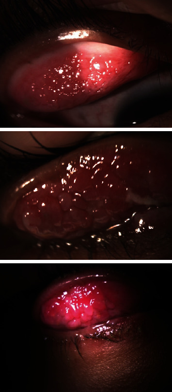
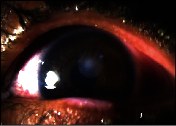
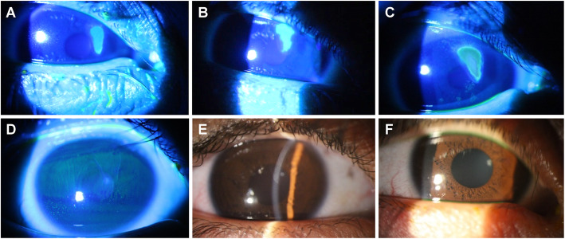
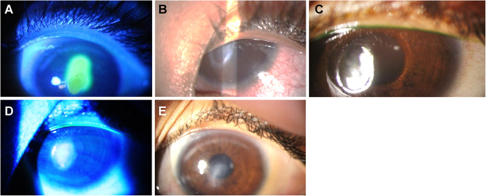
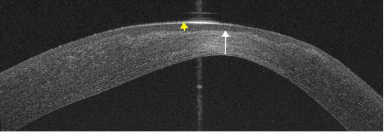
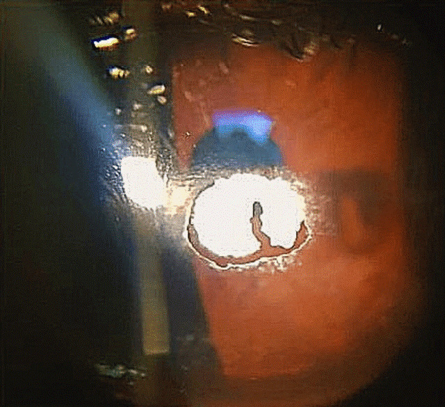

3255 — Loét giác mạc hình khiên trong viêm kết mạc mùa xuân / Corneal shield ulcer in vernal keratoconjunctivitis (VKC)
Tags: pattern:loet-giac-mac pattern:loet-hinh-khien pattern:nhu-gai-lon pattern:manh-inhien pattern:khuyet-bieu-mo-man-tinh pattern:canxi-hoa pattern:di-ung-mat vung:mat vung:giac-mac vung:ket-mac vung:mi-mat protocol:den-khe protocol:fluorescein protocol:AS-OCT protocol:cam-mau-cay protocol:te-bao-hoc protocol:debridement protocol:AMT score:Cameron score:Bonini incidentaloma:khong
Mức chắc chắn (certainty): tổng hợp y văn (literature synthesis) — dựng từ loạt 193 mắt/163 bệnh nhân loét khiên có phân độ Cameron và kết cục theo từng cách điều trị (Am J Ophthalmol 2013, PMID 23218707, DOI 10.1016/j.ajo.2012.09.014), 2 ca có ảnh diễn tiến đầy đủ (J Med Case Rep 2020, PMC7298766, CC BY 4.0), loạt 290 mắt VKC (J Ayub Med Coll Abbottabad 2017, PMID 28712175), loạt 135 bệnh nhân VKC (Rom J Ophthalmol 2022, DOI 10.22336/rjo.2022.61), khuyến cáo chuyên gia châu Á (Front Med 2022, PMC9376221, CC BY), tổng quan 2026 về VKC trẻ em (Children 2026, PMC13025120, CC BY), ca loét canxi hóa ở giác mạc hình chóp có AS-OCT (GMS Ophthalmol Cases 2025, PMC12286868, CC BY 4.0), loạt phẫu thuật nhú gai + màng kết tự thân (Case Rep Ophthalmol Med 2024, PMC11319060, CC BY), kỹ thuật debridement dưới OCT trong mổ (Indian J Ophthalmol 2018, PMC5989504, CC BY-NC-SA 4.0), cùng các nghiên cứu tacrolimus (PMC7852099, PMID 33144336) và triamcinolone dưới sụn mi (PMID 31276459). Nhóm không có bệnh nhân của mình; chỗ chưa đủ chắc ghi rõ "chưa rõ". Không ghi tên tác giả — attribution = tạp chí + năm + PMCID/DOI.
Câu chốt: đứa trẻ ngứa mắt, sợ ánh sáng, mi trên có nhú gai lớn ("sỏi cuội"), và trên 1/3 trên giác mạc có một ổ loét hình bầu dục/bờ rõ — đó là loét hình khiên (shield ulcer), biến chứng 3–11% của VKC và là nguyên nhân mù một mắt ở trẻ. Bốn số phải nhớ: loét khiên gặp ở 3–11% bệnh nhân VKC và 3,1% số mắt trong một loạt 290 mắt; grade 1 khỏi bằng thuốc 94%, nhưng grade 3 chỉ 1,7% khỏi bằng thuốc so với 100% khi bóc mảng + màng ối; tái phát 14,5%, viêm giác mạc nhiễm khuẩn thứ phát 10%; và mảng xơ–protein ở đáy loét chính là thứ chặn biểu mô lành — nên corticoid đơn thuần không bao giờ làm tan mảng.
1. Tổng quan bệnh học – cơ chế hình ảnh (TẠI SAO)
1.1 Vì sao "mùa xuân" lại có loét giác mạc
- Viêm kết mạc mùa xuân (vernal keratoconjunctivitis, VKC) là bệnh dị ứng mạn tính bề mặt nhãn cầu, đỉnh ở trẻ trai 5–15 tuổi (tỉ lệ nam:nữ 3:1 trước dậy thì), thường hai bên không đối xứng, tái diễn theo mùa ở vùng ôn đới và quanh năm ở vùng nóng ẩm (PMC7298766).
- Cơ chế hai pha: pha type I qua IgE (tế bào mast xổ hạt → histamin, tryptase) và pha muộn type IV qua Th2/eosinophil (IL-4, IL-5, IL-13). Eosinophil giải phóng protein hạt gây độc biểu mô — MBP (major basic protein), ECP, EDN — vừa phá biểu mô vừa ức chế biểu mô di chuyển để bít ổ khuyết (PMID 24079715; PMC13025120).
- Hình thái: thể sụn mi (nhú gai lớn ở kết mạc sụn mi trên, hay gặp châu Âu/Bắc Mỹ), thể rìa (nhú ở rìa + dải Trantas — châu Á/châu Phi), và thể hỗn hợp (hay gặp vùng nhiệt đới) (PMC7298766).
- Nhú gai lớn (giant papilla) được định nghĩa là > 1 mm; bề mặt nhú dẹt, có thể bắt màu fluorescein — chính các đỉnh dẹt này cọ xát giác mạc (PMC9376221).
1.2 Hai "cú đánh" tạo ra ổ loét hình khiên
| Thành phần | Cơ chế | Hệ quả trên giác mạc |
|---|---|---|
| Cú đánh 1 — cơ học | Mỗi lần chớp, nhú gai lớn ở sụn mi trên cọ vào 1/3 trên giác mạc; hiện tượng Bell đưa giác mạc lên dưới mi khi nhắm → vùng tổn thương luôn ở trên | Trợt biểu mô vi thể tái diễn → mất hàng rào |
| Cú đánh 2 — hóa học/miễn dịch | MBP/ECP/EDN từ eosinophil gây độc biểu mô + chặn di chuyển tế bào; mucus dính vào ổ khuyết | Ổ khuyết không lành, bờ dày, gồ, đáy đọng mảng xơ–protein |
- TẠI SAO hình "khiên" (shield): ổ loét bầu dục, bờ rõ, bề ngang rộng hơn bề dọc, nằm đúng vùng quét của bờ mi ở 1/3 trên — hình dạng phản ánh diện cọ xát, không phản ánh mạch máu hay vùng giải phẫu (PMC9376221; PMC12286868).
- TẠI SAO có mảng (plaque): khi ổ khuyết kéo dài, mảnh vụn viêm + mucus + protein nước mắt lắng ở đáy, rồi canxi hóa. Mô bệnh mảng cho thấy sợi collagen chạy từ màng Bowman vào sâu trong mảng và protein hạt eosinophil (MBP) dương tính — tức mảng không phải "giả màng" rửa trôi được mà là cấu trúc xơ–protein bám chắc (PMID 24079715; PMC12286868).
- TẠI SAO mảng chặn lành: biểu mô lành bằng di chuyển từ rìa vào, nhưng phải có nền (basement membrane) tương thích. Mảng che mất màng Bowman, tạo bậc thềm cao và canxi làm biểu mô không bám được — đây là lý do bóc mảng làm lành nhanh hơn hẳn (PMC7298766; PMID 23218707).
1.3 Vì sao hình ảnh học lại là "đo" chứ không chỉ "nhìn"
- Đèn khe cho biết vị trí, kích thước, bờ, đáy, mảng, mủ tiền phòng, dấu Seidel — nhưng không đo được độ dày biểu mô và không thấy tổn thương dưới lâm sàng.
- AS-OCT tiền đoạn đo bản đồ bề dày biểu mô 5 mm trung tâm: ở trẻ VKC, vùng trên mỏng hơn có ý nghĩa — 51,07 ± 4,11 µm vs 52,54 ± 2,01 µm (p = 0,008), bề dày tối thiểu 45,99 vs 50,11 µm (p < 0,001), và hiệu (MIN−MAX) âm hơn (−11,77 ± 9,38 vs −5,80 ± 1,88 µm, p = 0,001) — tức mỏng khu trú đúng nơi nhú gai cọ (PMID 36462126).
- Sau khi ổ loét lành, AS-OCT phát hiện mô đệm mỏng đi + biểu mô phì đại bù trừ: ca loét canxi hóa ở giác mạc hình chóp có mô đệm 233 µm và biểu mô 92 µm (PMC12286868). Lưu ý trung thực: chú thích ảnh của bài gốc ghi 325 µm, thân bài ghi 233 µm — nguồn không thống nhất, bài này dẫn theo thân bài.
- TẠI SAO mô đệm mỏng quan trọng: nó là ngưỡng an toàn của dao/bàn chải khi bóc mảng — bóc trên mô đệm 233 µm có nguy cơ thủng giác mạc, đúng tình huống ca báo cáo phải dừng bóc và chuyển sang màng ối khô + kính áp tròng băng (PMC12286868).
- Giới hạn: AS-OCT không phân biệt được mảng vô khuẩn với thâm nhiễm nhiễm khuẩn; muốn phân biệt phải nhuộm Gram/KOH + cấy trước khi nhỏ corticoid mạnh (PMC9376221).
1.4 Dịch tễ và gánh nặng — số cụ thể
- VKC hiếm ở châu Âu (< 1–3,2/10.000 dân, trong đó 0,8/10.000 có biến chứng giác mạc), 1,2% ở Nhật, 4,0–11,1% ở một số nước châu Phi (PMC9376221).
- Loét khiên gặp ở ~3–11% bệnh nhân VKC (PMC12286868 dẫn lại); 3,1% số mắt trong loạt 290 mắt (PMID 28712175); 2,96% trong loạt 135 bệnh nhân (PMID 36589333).
- Trong 700 trẻ điều trị tại một trung tâm, chỉ 4 ca loét khiên (0,57%) — cho thấy tần suất phụ thuộc tuyến (PMC7298766 dẫn lại).
- Biến chứng nặng nhất của VKC không chỉ là loét: trong loạt 290 mắt, sẹo giác mạc 20,3%, giác mạc hình chóp 5,9% (PMID 28712175); trong loạt 135 bệnh nhân, glôcôm do corticoid 8,89% — cao hơn cả loét khiên (PMID 36589333).
2. Mẫu hình + chẩn đoán phân biệt theo vị trí (Gamut)
- Mẫu hình chốt: ổ loét nông, bầu dục, bờ rõ, ở 1/3 trên giác mạc ± mảng trắng–vàng ở đáy ± mủ tiền phòng, kèm nhú gai lớn ở sụn mi trên và/hoặc dải Trantas ở rìa.
- Gamut theo vị trí:
- 1/3 trên (kinh điển): loét khiên VKC/AKC; viêm kết mạc rìa trên (SLK); loét do mi quặm/lông xiêu; dị vật dưới mi trên.
- Trung tâm/trung tâm–cạnh: loét khiên canxi hóa ở giác mạc hình chóp (cọ xát ở đỉnh chóp — PMC12286868); loét do kính tiếp xúc; loét sau chấn thương.
- Bất kỳ vị trí: Herpes, vi khuẩn, nấm, Acanthamoeba, loét thần kinh dưỡng, do phơi nhiễm/mi hở, bỏng hóa chất.
- Gợi nhớ SHIELD (do nhóm tự đặt, không phải thang chuẩn): Shield ulcer (VKC/AKC) · Herpes · Infection (vi khuẩn/nấm/Acanthamoeba) · Exposure/neurotrophic · Lens (kính tiếp xúc) · Dry eye/dellen/mechanical.

Ba mức độ nhú gai lớn (cobblestone) ở kết mạc sụn mi trên của cùng một trẻ VKC thể sụn mi, chụp cách nhau nhiều tháng: nhú tăng dần kích thước và số lượng, bề mặt dẹt, bóng, xếp như sỏi cuội. Đây là "cối xay" cọ vào 1/3 trên giác mạc mỗi lần chớp. Nguồn: Case Rep Ophthalmol Med 2024 (PMC11319060), Fig. 4, CC BY 4.0.
Mắt đỏ, sợ ánh sáng ở trẻ VKC: ổ loét bầu dục ở 1/3 trên giác mạc, bờ rõ, đáy mờ đục; xung quanh là kết mạc rìa phù nề. Ảnh đèn khe ánh sáng khuếch tán, không nhuộm fluorescein. Nguồn: Case Rep Ophthalmol Med 2024 (PMC11319060), Fig. 1, CC BY 4.0.3. Bảng so sánh phân biệt (ma trận đối chiếu)
| Thực thể (entity) | Hình ảnh điển hình | Chốt vào (rule-in) | Chốt loại (rule-out) | Gợi ý xác nhận |
|---|---|---|---|---|
| Loét khiên VKC grade 1 | Ổ loét bầu dục 1/3 trên, đáy trong, không mảng, bờ đều | Nhú gai lớn > 1 mm + dải Trantas + loét 1/3 trên | Đáy đục/mảng vàng → đã sang grade 2–3; dendrite → Herpes | Đèn khe + fluorescein; hỏi ngứa theo mùa, tiền sử dị ứng |
| Loét khiên VKC grade 2–3 (có mảng) | Mảng trắng–vàng dày ở đáy, bờ loét gồ, dày, ổ khuyết kéo dài > 2 tuần | Mảng bám chắc, không trôi khi rửa + nhú gai lớn | Mủ tiền phòng + thâm nhiễm lan → nghĩ bội nhiễm, phải cấy trước | Đèn khe + AS-OCT (độ dày mô đệm dưới mảng); cấy/nhuộm trước khi corticoid mạnh |
| Herpes biểu mô | Đuôi gai (dendrite) nhánh, đầu tận cùng có bóng, nhuộm fluorescein bắt màu nhánh | Dendrite + giảm cảm giác giác mạc ± tiền sử tái phát | Bờ loét bầu dục đều + nhú gai lớn → không phải Herpes | Đèn khe sau nhuộm; so sánh cảm giác 2 bên; PCR HSV nếu nghi |
| Viêm giác mạc vi khuẩn | Thâm nhiễm đặc, bờ mờ, lan nhanh, mủ tiền phòng, đau nhiều | Khởi phát < 48 giờ + thâm nhiễm đặc + mủ tiền phòng | Nhú gai lớn + loét 1/3 trên mạn tính → VKC | Cạo giác mạc nhuộm Gram + cấy trước kháng sinh |
| Viêm giác mạc nấm | Bờ lông vũ, tổn thương vệ tinh, mảng nội mô, tiền sử chấn thương thực vật | Bờ lông vũ + vệ tinh; KOH dương | Bờ bầu dục rõ, không vệ tinh → ít nghĩ nấm | KOH/calcofluor + cấy nấm; IVCM hỗ trợ |
| Acanthamoeba | Đau nhiều hơn hình ảnh, vòng thâm nhiễm, tiền sử kính/tiếp xúc nước | Đau–hình ảnh không tương xứng + vòng thâm nhiễm | Không đau tương xứng + nhú gai lớn → VKC | KOH/calcofluor, cấy, PCR; IVCM |
| Loét thần kinh dưỡng | Ổ khuyết bờ cuộn tròn, đáy khô, giảm/không cảm giác, không đau | Giảm cảm giác + bờ cuộn + tiền sử HSV/phẫu thuật/thân não | Cảm giác bình thường + ngứa + nhú gai → không phải | Test cảm giác, nhuộm fluorescein, loại trừ nhiễm |
| Loét khiên canxi hóa ở giác mạc hình chóp | Ổ loét trung tâm/trung tâm–cạnh, mảng canxi hình vòng, KHÔNG nhú gai, KHÔNG dải Trantas; AS-OCT mô đệm mỏng 233 µm | Giác mạc hình chóp + mảng canxi + không bệnh dị ứng | Có nhú gai lớn/dải Trantas → VKC | Topography/Pentacam + AS-OCT; không bóc sâu nếu mô đệm mỏng |

Cùng một mắt phải, A–F: (A) loét 6,0 × 2,7 mm ở 1/3 trên, bờ rõ; (B) sau 3 tuần điều trị thuốc — giảm nhẹ nhưng còn ổ khuyết; (C) sau 90 ngày ổ khuyết và mảng to hơn — đây là thời điểm quyết định bóc; (D) 1 tuần sau bóc mảng: biểu mô liền hoàn toàn, còn mờ mô đệm nông; (E) 45 ngày và (F) 8 tháng: mờ mô đệm khu trú, không tái phát. Nguồn: J Med Case Rep 2020 (PMC7298766), Fig. 1, CC BY 4.0.Ba dấu hiệu quyết định trên đèn khe:
- Vị trí 1/3 trên + hình bầu dục — gần như là "chữ ký" của loét khiên.
- Đáy có mảng trắng–vàng bám chắc — chuyển từ grade 1 sang grade 2/3 và là chỉ định bóc.
- Nhú gai lớn ở sụn mi trên — phải lộn mi trên mới thấy; không lộn mi là bỏ sót chẩn đoán.
4. Protocol khám/đo + phân độ + ngưỡng quyết định
4.1 Thứ tự khám cố định (7 bước)
| Bước | Dụng cụ | Ghi nhận | Ngưỡng hành động |
|---|---|---|---|
| 1 | Thị lực (Snellen/Lea) | Thị lực từng mắt, có/không kính | Chênh ≥ 2 dòng hoặc < 20/40 → tầm soát nhược thị |
| 2 | Đèn khe — lộn mi trên | Nhú gai > 1 mm, dải Trantas, sẹo, co rút mi | Nhú gai lớn + loét → VKC là chẩn đoán chính |
| 3 | Fluorescein + ánh sáng cobalt | Kích thước ổ loét (mm), bờ, đáy, mảng, Seidel | Mảng + ổ khuyết > 2 tuần → cân nhắc bóc |
| 4 | AS-OCT tiền đoạn | Bề dày biểu mô, bề dày mô đệm dưới đáy, bậc thềm bờ | Mô đệm < 250 µm → không bóc sâu, chuẩn bị màng ối |
| 5 | Nhuộm Gram/KOH + cấy (khi có mảng/mủ/không lành) | Vi khuẩn, nấm, Acanthamoeba | Bất kỳ dấu hiệu nhiễm → điều trị nhiễm trước corticoid mạnh |
| 6 | Nhãn áp + soi góc | IOP, sắc tố, dính góc | IOP tăng → giảm/ngừng corticoid, thêm thuốc hạ nhãn áp |
| 7 | Topography/tomography + khúc xạ (định kỳ hằng năm) | Giác mạc hình chóp, loạn thị không đều | Bất thường → CXL/khám chuyên khoa giác mạc |
Nguyên tắc: luôn lộn mi trên ở mọi trẻ ngứa mắt mạn; luôn nhuộm fluorescein trước khi kết luận "chỉ là dị ứng"; luôn đo nhãn áp khi dùng corticoid — trong loạt 135 bệnh nhân, glôcôm do corticoid 8,89% (PMID 36589333).
4.2 Phân độ Cameron cho loét khiên (1–3) và kết cục
| Độ | Định nghĩa | Điều trị | Lành biểu mô (số từ loạt 193 mắt) |
|---|---|---|---|
| Grade 1 | Đáy trong, bờ rõ, KHÔNG có vật liệu viêm đại thể | Thuốc đơn thuần (corticoid ngắn + thuốc chống dị ứng/immunomodulator) | 94% (67/71 mắt) |
| Grade 2 | Có vật liệu viêm ở bờ/đáy (mảng nhầy, đáy đục) — lành chậm hơn | Thuốc hoặc bóc mảng hoặc bóc + màng ối | 88% thuốc · 95% bóc · 100% màng ối |
| Grade 3 | Mảng xơ–protein dày, protein lắng vào màng Bowman | Bóc mảng + màng ối (thuốc đơn thuần gần như vô hiệu) | 1,7% (1/59 mắt) với thuốc vs 100% khi bóc + màng ối |
- Thị lực sau lành trung bình: 20/30 (grade 1), 20/30 (grade 2), 20/40 (grade 3); tái phát 14,5% (28/193 mắt); viêm giác mạc vi khuẩn thứ phát 10% (20/193 mắt) (PMID 23218707).
- Loạt của Cameron: 20/23 (87%) ổ loét có mảng lành nhanh sau bóc mảng; chỉ 25% grade 2 lành tốt với thuốc đơn thuần (dẫn trong PMC7298766).
- Phân độ toàn bệnh VKC (dùng để quyết định bước điều trị): Bonini (theo dấu hiệu + triệu chứng, hay dùng ở châu Á), Gokhale (nhẹ → trung bình từng đợt → trung bình mạn → nặng → "blinding VKC") và thang 5-5-5 (100 điểm cho nhú gai hoạt động, thâm nhiễm rìa, loét khiên…) (PMC9376221; PMC12507153).

*Mắt trái, grade 3: (A) ổ loét 8,0 × 3,5 mm với mảng đặc ở trung tâm; (B) ngày 1 sau bóc — khuyết biểu mô/mô đệm nông rộng đúng diện bóc; (C) 2 tuần: biểu mô liền, còn mỏng mô đệm trước 20%; (D) 45 ngày và (E) 6 tháng: mờ mô đệm lan tỏa, không tái phát; thị lực 20/60 do mờ trục. Nguồn: J Med Case Rep 2020 (PMC7298766), Fig. 2, CC BY 4.0.*4.3 Điều trị — so sánh có số
| Biện pháp | Cơ chế | Chỉ định | Kết quả (số) | Hạn chế |
|---|---|---|---|---|
| Corticoid tại chỗ, nhịp ngắn (loteprednol, fluorometholon; prednisolon khi nặng) | Ức chế phospholipase A2, giảm di chuyển bạch cầu và phù | Mọi grade, đặc biệt khi giác mạc đã tổn thương; nhịp 3–5 ngày, loteprednol 7–8 ngày | Giảm nhanh ngứa, sợ ánh sáng, viêm rìa | Glôcôm do corticoid 8,89%; chậm lành biểu mô; KHÔNG dùng corticoid–kháng sinh phối hợp (VKC không phải nhiễm) |
| Tacrolimus 0,02–0,1% | Ức chế calcineurin trong lympho T (mạnh hơn cyclosporin ~100 lần) | VKC trung bình–nặng, phụ thuộc corticoid, hoặc thể sụn mi | Meta-phân tích 5 RCT/203 mẫu: điểm dấu hiệu SMD −1,39 (95% CI −2,50…−0,27), triệu chứng SMD −0,92; loạt 12 bệnh nhân: điểm 14,3 → 7,33 sau 2 tuần, 50% cai corticoid sau 1 năm | Bỏng rát khi nhỏ (100%); chưa được cấp phép ở nhiều nước; nguy cơ nhiễm nếu dùng dài |
| Cyclosporin A 0,05–2% | Ức chế calcineurin qua cyclophilin | Bước đầu tiên ở VKC trung bình–nặng/không dung nạp corticoid (khuyến cáo châu Á) | Kiểm soát triệu chứng, giảm corticoid; khởi tác > 1 tuần | Bỏng rát; cần theo dõi dài |
| Triamcinolone dưới sụn mi | Corticoid tác dụng kéo dài tại chỗ | Thất bại thuốc nhỏ, đợt cấp nặng, nhú gai lớn gây co rút mi | 46 mắt/145 mũi, trung bình 3,2 mũi/mắt; thị lực 0,33 → 0,11 logMAR (p < 0,0001); không ca nào tăng IOP cần điều trị | Thủng/lõm mô mỡ mi, teo da; kỹ thuật |
| Bóc mảng (debridement) | Lấy vật liệu độc + hàng rào cơ học, tạo nền cho biểu mô | Grade 2 không lành sau 2 tuần, grade 3 | Grade 2: 95% lành; grade 3: 100% lành (kèm màng ối); 87% lành nhanh (loạt Cameron) | Chảy máu, thủng nếu mô đệm mỏng, nhiễm sau mổ |
| Màng ối (AMT), kể cả màng ối khô | Giá đỡ cho biểu mô di chuyển; giảm TGF-β, giảm viêm | Grade 3, ổ khuyết sâu, mô đệm mỏng | Grade 3: 100%; ca màng ối khô: lành sau 3 tuần, thị lực 1,06 → 0,3 logMAR | Cần phòng mổ/khâu; màng ối khô đắt, ít nơi có |
| PTK (excimer) | Bào phẳng mảng + bậc thềm | Mảng dày, gồ, sau bóc chưa sạch | 3 mắt trong y văn có cải thiện (dẫn trong PMC7298766) | Loạn thị, mờ; ít dữ liệu ở trẻ |
| Cắt nhú gai + ghép màng kết tự thân | Loại nguồn cọ xát | Thể sụn mi kháng trị, co rút mi cơ học | Loạt ca: hết loét, cải thiện mi; ghép màng kết sống | Phẫu thuật lớn ở trẻ; nguy cơ dính |
| Omalizumab (kháng IgE) | Bắt IgE tự do, giảm FcεRI trên mast/basophil | VKC nặng kháng trị, phụ thuộc corticoid | 46 bệnh nhân/18 bài (chủ yếu ca báo cáo): cải thiện/rút hết triệu chứng | Ngoài nhãn, giá cao, chưa có RCT ở trẻ |

AS-OCT tiền đoạn 3 tuần sau phẫu thuật: mô đệm mỏng khu trú (mũi tên trắng) + biểu mô phì đại bù trừ (mũi tên vàng) — biểu mô "đội" lên che khiếm khuyết mô đệm. Đây là lý do bề mặt có thể trông lành nhưng khúc xạ vẫn lệch. Nguồn: GMS Ophthalmol Cases 2025 (PMC12286868), Fig. 8, CC BY 4.0.4.4 Sơ đồ quyết định
flowchart TD
A[Tre ngua mat va so anh sang] --> B[Lon mi tren: nhu gai lon tren 1mm]
B -->|Khong co| C[Doc lai: Herpes, nhiem khuan, loet than kinh, di vat]
B -->|Co| D[Fluorescein: o loet 1/3 tren, hinh bau duc]
D --> E{Day loet co mang trang vang}
E -->|Khong| F[Grade 1: corticoid nhip ngan + chong di ung]
F --> G{Lanh sau 2 tuan}
G -->|Khong| H[Cân nhac boc mang]
E -->|Co| I[Grade 2 hoac 3: nhuom Gram KOH cay truoc]
I --> J[AS-OCT: do day mo dem duoi day]
J -->|Mo dem duoi 250 micromet| K[Boc nong + mang oi kho hoac AMT]
J -->|Mo dem day| L[Boc mang + AMT]
K --> M[Kinh ap trong bang + khang sinh du phong]
L --> M
M --> N[Theo doi 1 tuan den khi bieu mo lien]
N --> O[Immunomodulator duy tri + theo doi nhan ap va topography hang nam]
5. Biến thể bình thường và cạm bẫy
- Không lộn mi trên — nhú gai lớn chỉ ở sụn mi trên, nên khám thường quy "không thấy gì" rồi kết luận "viêm kết mạc dị ứng nhẹ". Đây là lỗi bỏ sót số 1; trẻ VKC có thể không chịu mở mắt vì sợ ánh sáng nên phải giảm ánh sáng phòng khám và khám nhiều lần (PMC13025120).
- Gọi là "loét nhiễm khuẩn" rồi chỉ nhỏ kháng sinh — ổ loét vô khuẩn, kháng sinh không làm tan mảng; trì hoãn bóc làm sẹo dày + nhược thị. Phải cấy trước rồi mới dùng corticoid mạnh (PMC7298766).
- Corticoid đơn thuần kéo dài — giảm viêm nhưng không lấy mảng, lại gây tăng nhãn áp (8,89%), mỏng giác mạc, nhiễm nấm/herpes. Không dùng corticoid + kháng sinh phối hợp như "vừa chống viêm vừa phòng nhiễm" (PMC9376221).
- Bỏ qua nhiễm nấm — VKC + corticoid dài là môi trường thuận lợi; đã có ca viêm giác mạc do Aspergillus trên loét khiên hồi phục nhờ ngừng corticoid, natamycin/amphotericin + cyclosporin (PMID 20127389). Mảng không lành dù đã bóc phải nghĩ nấm.
- Bóc quá tay trên mô đệm mỏng — ca loét canxi hóa ở giác mạc hình chóp có mô đệm 233 µm, bác sĩ dừng bóc vì nguy cơ thủng và chuyển màng ối khô + kính áp tròng băng (PMC12286868). AS-OCT trước khi bóc là bắt buộc khi nghi mỏng.
- Nhầm với Herpes — dendrite có nhánh + đầu tận cùng, giảm cảm giác, không có nhú gai lớn; corticoid làm Herpes bùng phát. Nếu bờ loét không đều, có nhánh, phải nhuộm fluorescein kỹ + so cảm giác 2 bên.
- Nhầm với loét thần kinh dưỡng — không đau, bờ cuộn, đáy khô, cảm giác giảm; điều trị khác hẳn (dưỡng ẩm, huyết thanh tự thân, kính băng), không phải immunomodulator.
- Nhầm mảng canxi hóa với dải canxi hóa (bài 3254) — dải nằm ngang đúng khe mi, hai bên, lan từ 3–9 giờ; mảng của loét khiên bầu dục, khu trú 1/3 trên, một bên, có nhú gai kèm. Điều trị khác nhau (EDTA/PTK vs bóc + màng ối).
- "Loét khiên chỉ do VKC" — sai: đã có ca loét khiên canxi hóa ở giác mạc hình chóp không nhú gai, không dải Trantas, do cọ xát ở đỉnh chóp (PMC12286868). Ở người trẻ mờ mắt + loét trung tâm không rõ nguyên nhân, hãy topography để tìm chóp.
- Quên nhược thị — ổ loét ở 1/3 trên gây loạn thị không đều + sẹo, ở trẻ 5–10 tuổi là cửa sổ nhược thị; phải đo khúc xạ, cho kính, che mắt và theo dõi thị lực sau khi loét lành, không chỉ nhìn giác mạc.
6. Tự lượng giá — Blind Quiz
Ca 1 — Bé trai 8 tuổi, ngứa mắt tái diễn mỗi mùa 3 năm, nay sợ ánh sáng và chảy nước mắt nhiều; mi trên có nhiều nốt to.
- Gợi ý: ổ loét bầu dục, bờ rõ, ở 1/3 trên; kết mạc rìa phù.
- Câu hỏi: (1) Dấu hiệu chính và vị trí? (2) Cần khám gì ngay để tìm nguồn cọ xát? (3) Ba chẩn đoán phân biệt?
Bấm để hiện đáp án (findings + chẩn đoán)
- Dấu hiệu: ổ loét hình khiên ở 1/3 trên giác mạc, bờ rõ, đáy mờ đục; kết mạc rìa sung huyết.
- Phải làm ngay: lộn mi trên tìm nhú gai lớn > 1 mm + dải Trantas — đây là chốt chẩn đoán VKC.
- Chẩn đoán: loét giác mạc hình khiên trong VKC — grade 1–2 tùy đáy có mảng hay không.
- Phân biệt: Herpes (dendrite), viêm giác mạc vi khuẩn (thâm nhiễm đặc + mủ tiền phòng, khởi phát < 48 giờ), loét thần kinh dưỡng (không đau, bờ cuộn).
- Nguồn ảnh: Case Rep Ophthalmol Med 2024 (PMC11319060), Fig. 1, CC BY 4.0.
Ca 2 — Bé trai 4 tuổi, ngứa mắt 1 năm, đã nhỏ thuốc nhiều tháng không đỡ; mắt trái có ổ loét lớn, đáy đặc trắng–vàng.
- Gợi ý: ổ loét 8,0 × 3,5 mm, mảng dày ở trung tâm; các ảnh B–E là diễn tiến sau can thiệp.
- Câu hỏi: (1) Phân độ Cameron? (2) Vì sao thuốc đơn thuần gần như chắc chắn thất bại? (3) Hai lựa chọn phẫu thuật và nguy cơ của từng cách?
Bấm để hiện đáp án (findings + chẩn đoán)
- Phân độ: grade 3 — mảng xơ–protein dày, protein lắng vào màng Bowman.
- Vì sao thuốc thất bại: mảng là hàng rào cơ học + kho dự trữ protein độc của eosinophil; corticoid không phân giải mảng, biểu mô không thể bắc cầu qua bậc thềm. Trong loạt 193 mắt, chỉ 1,7% grade 3 lành bằng thuốc (PMID 23218707).
- Phẫu thuật: bóc mảng (blunt spatula, bóc cả bờ gồ quanh ổ) → 95–100% lành; kèm màng ối khi mô đệm mỏng/sâu. Nguy cơ: thủng giác mạc nếu mô đệm mỏng, nhiễm sau mổ, mờ mô đệm tồn tại (ca này còn mỏng mô đệm trước 20% và thị lực 20/60).
- Nguồn ảnh: J Med Case Rep 2020 (PMC7298766), Fig. 2, CC BY 4.0.
Ca 3 — Nam 38 tuổi, giác mạc hình chóp hai bên, không tiền sử dị ứng, không ngứa mắt; mắt trái đau và mờ 1 tháng, có mảng canxi hình vòng ở trung tâm–cạnh, KHÔNG có nhú gai.

- Gợi ý: không nhú gai, không dải Trantas, mảng canxi hóa hình vòng, trung tâm còn mô đệm; AS-OCT cho mô đệm 233 µm.
- Câu hỏi: (1) Vì sao vẫn gọi là "loét khiên" dù không VKC? (2) Vì sao không bóc hết mảng? (3) Điều trị thay thế đã dùng?
Bấm để hiện đáp án (findings + chẩn đoán)
- Chẩn đoán: loét khiên canxi hóa do cọ xát ở đỉnh chóp (giác mạc hình chóp) — cơ chế cơ học thuần, không có thành phần dị ứng; đây là ca đầu tiên được báo cáo không kèm VKC/AKC (PMC12286868).
- Vì sao không bóc hết: mô đệm chỉ 233 µm, bóc sâu có nguy cơ thủng; bác sĩ dừng bóc phần còn lại.
- Điều trị thay thế: màng ối khô 12 mm + kính áp tròng băng; màng ối tiêu trong 2–3 tuần, biểu mô liền, thị lực 1,06 → 0,3 logMAR sau 3 tháng, không tái phát.
- Bài học: loét khiên không độc quyền cho VKC; phải topography khi không có nhú gai, và AS-OCT trước khi can thiệp.
- Nguồn ảnh: GMS Ophthalmol Cases 2025 (PMC12286868), Fig. 1, CC BY 4.0.
7. Câu hỏi nghiên cứu & điểm chưa đồng thuận (tính đến 11/2026)
[Tranh cãi] Ở trẻ VKC có loét khiên grade 2 (đáy có mảng), bóc mảng sớm ngay sau 2 tuần có làm giảm thời gian lành và nguy cơ sẹo so với kéo dài thuốc đơn thuần không?
- Đã biết: loạt hồi cứu 193 mắt cho thấy grade 2 lành 88% với thuốc, 95% với bóc, 100% với bóc + màng ối; loạt Cameron báo 87% lành nhanh sau bóc mảng, và chỉ 25% grade 2 lành tốt với thuốc (PMID 23218707; PMC7298766).
- Chưa rõ: không có RCT so sánh thời điểm bóc; các loạt khác nhau về định nghĩa grade 2, thời gian theo dõi và cách đo sẹo, nên không thể kết luận bóc sớm luôn tốt hơn.
- Hướng nghiên cứu: RCT đa trung tâm phân tầng theo độ dày mô đệm trên AS-OCT, outcome thời gian liền biểu mô (ngày), mờ mô đệm, thị lực 6–12 tháng, nhược thị.
- Nguồn: PMID 23218707 (2013, DOI 10.1016/j.ajo.2012.09.014); PMC7298766 (2020).
[Khoảng trống] Độ dày/độ rộng mảng trên AS-OCT có dự báo được ổ loét nào sẽ không lành bằng thuốc — và ngưỡng nào là chỉ định bóc?
- Đã biết: AS-OCT đo được bề dày biểu mô (vùng trên 51,07 vs 52,54 µm, p = 0,008) và bề dày mô đệm dưới đáy (ca loét canxi hóa: 233 µm), cho thấy giá trị định lượng ngoài đèn khe (PMID 36462126; PMC12286868).
- Chưa rõ: chưa có nghiên cứu tiến cứu nào liên hệ độ dày mảng/độ sâu tổn thương trên AS-OCT với kết cục lành; ngưỡng "mô đệm < 250 µm thì không bóc" hiện là suy luận từ ca, không phải chuẩn.
- Hướng nghiên cứu: đoàn hệ tiến cứu AS-OCT + đèn khe ở trẻ loét khiên, mô hình dự báo không lành sau 2 tuần, kiểm định ngoài (external validation).
- Nguồn: PMC12286868 (2025); PMID 36462126 (2023, DOI 10.1007/s10792-022-02596-9).
[Khác biệt thực hành] Với VKC trung bình–nặng, nên bắt đầu bằng cyclosporin A (rẻ, sẵn có) hay tacrolimus (mạnh hơn, nhưng off-label và bỏng rát) — và nồng độ tacrolimus nào?
- Đã biết: khuyến cáo châu Á đặt CsA là bước đầu ở VKC trung bình–nặng, tacrolimus dành cho ca kháng CsA; meta-phân tích 5 RCT/203 mẫu cho thấy tacrolimus giảm điểm dấu hiệu SMD −1,39; loạt 0,1% tacrolimus giảm điểm 14,3 → 7,33 sau 2 tuần nhưng 100% bỏng rát (PMC9376221; PMID 33144336; PMC7852099).
- Chưa rõ: không có RCT so sánh trực tiếp CsA vs tacrolimus ở trẻ, và 0,03% vs 0,1% chưa được so sánh đầu-đối-đầu; tỉ lệ bỏ trị do bỏng rát khác nhau rất nhiều giữa các nghiên cứu.
- Hướng nghiên cứu: RCT không kém hơn (non-inferiority) CsA 0,1% vs tacrolimus 0,03%, outcome thời gian kiểm soát, số đợt cấp/năm, lượng corticoid tiết kiệm, tuân thủ.
- Nguồn: PMC9376221 (2022); PMID 33144336 (2022, DOI 10.1136/ejhpharm-2020-002447); PMC7852099 (2021).
Bài liên quan chéo
- 400 – Tổng quan Mắt & thị giác
- 6132 – Viêm giác mạc nhiễm khuẩn liên quan kính tiếp xúc (phân biệt loét vô khuẩn vs nhiễm khuẩn)
- 3216 – Viêm giác mạc do nấm sợi (bội nhiễm nấm trên loét khiên)
- 1472 – Viêm giác mạc Acanthamoeba
- 1456 – Bỏng hóa chất mắt
- 3204 – Loét giác mạc thần kinh dưỡng
- 3203 – Đe dọa thủng giác mạc
- 3201 – Sẹo giác mạc & ghép giác mạc
- 3254 – Dải canxi hóa giác mạc (phân biệt mảng canxi khu trú với dải ngang khe mi)
- 3249 – Hội chứng phân tán sắc tố & glôcôm sắc tố (theo dõi nhãn áp khi dùng corticoid)
Ảnh
- Tên file:
3255_<mô tả>_<phương thức>_<nguồn>.jpg; nguồn + giấy phép từng ảnh trongimages/CREDITS.md. - Tất cả ảnh đều tải từ PMC và dùng nguyên bản (không cắt/ghép/đổi màu). Không dùng ảnh từ bài không rõ giấy phép hoặc paywall.
Không dùng để chẩn đoán độc lập khi chưa có người hướng dẫn.